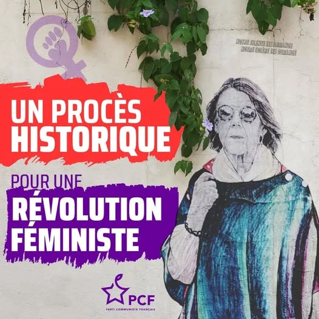

Publication d’archives
Mazan : Un procès historique qui montre le chemin qu’il reste à parcourir - Communiqué du PCF - Parti…
Date indiquée par Facebook · 19 décembre 2024
Texte conservé avec la publication
Contexte du dossier
Dans son éditorial de L’Humanité du 27 septembre, Maud Vergnol dénonce l’instrumentalisation raciste du meurtre de Philippine par le RN et Retailleau. Elle oppose à la seule origine d’un suspect les violences commises par des hommes de profils divers et le procès de Mazan, face à Gisèle Pelicot. Son argument vise la culture du viol, les moyens de la justice, le suivi des auteurs et les politiques d’égalité ; il ne transforme pas l’origine en explication du crime. Le 19 décembre, la fédération relaie un communiqué PCF présentant Mazan comme un procès historique et soulignant le chemin restant à parcourir. La légende n’en reproduit pas le développement : elle atteste cette position et ne permet pas d’ajouter un programme absent.

Sources
Archive rouge · export Facebook · AR-0002-FB-01219
À lire aussi · 1944-2024 : 80 ans du droit de vote des femmes